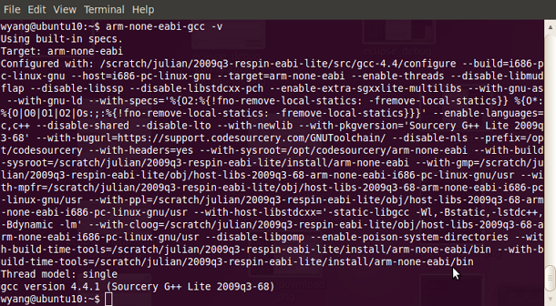
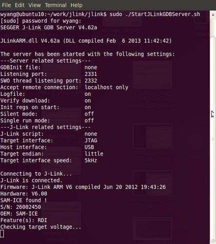
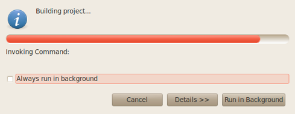
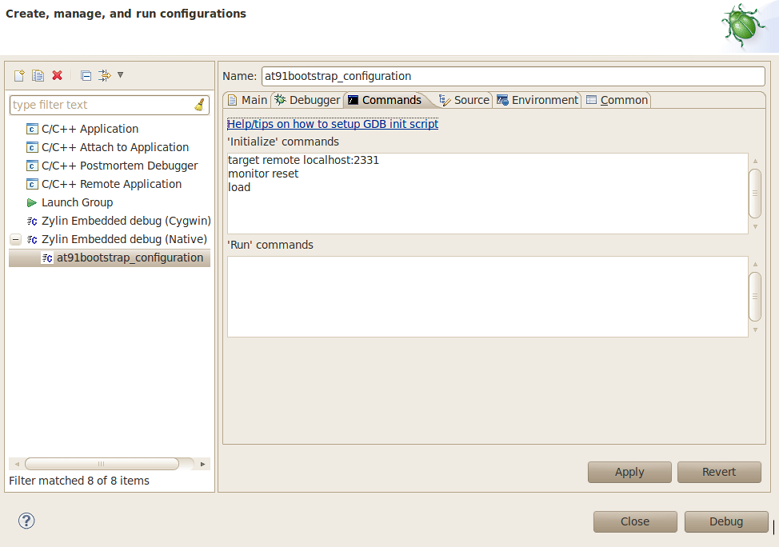
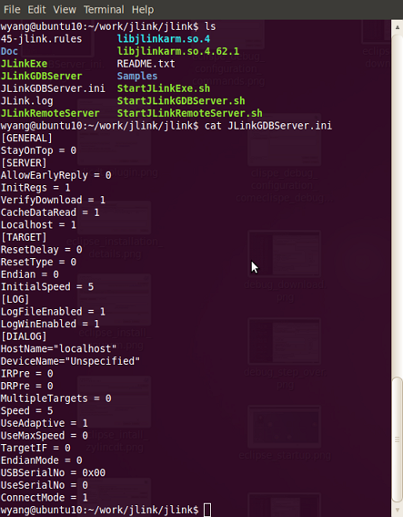

AT91Bootstrap Debugging with Eclipse for Linux
Introduction
The Eclipse- The Eclipse IDE is the framework into which the other necessary tools are integrated.
- Eclipse itself includes an editor, project manager and debugger interface.
- The GNU ARM Plug-Ins is intended for the embedded cross-development which C/C++ language used.
- The Zylin / CDT Plug-Ins allow the Eclipse debugger to connect to a remote target via debug connection.
- The GNU Tools provide the assembler, compiler, linker and other code-generation utilities.
- The JLink GDB Server is a remote server for the GDB, and the GDB Server translates the GDB commands into the JLink commands.
- The Atmel SAM-ICE™ is a JTAG emulator designed for Atmel SAM3, SAM7, SAM9, SAMA ARM-based microcontrollers, including the Thumb® mode.
- AT91SAM
 -EK boards is the evaluation board for AT91SAM chips.
-EK boards is the evaluation board for AT91SAM chips.
Setup Cross-Development Environment
Install Cross-Development Toolchain(arm-none-eabi-gcc).
Download the toolchain software package( e.g. arm-2009q3-68-arm-none-eabi-i686-pc-linux-gnu.tar.bz2) from the Sourcery website. Decompress the file directly in the work directory(e.g. ~/opt ). To set environment variable "PATH", modify ~/.bashrc.
$ export PATH=[INSTDIR]/bin:$PATH
To verify the cross toolchain installed properly, please type the following command.
$ arm-none-eabi-gcc -v

Install JLink GDB Server
Download J-Link software & documentation pack for Linux from the Segger website- Install libusb:
$ sudo apt-get update
$ sudo apt-get install libusb-dev
- Copy the jlink libray to the system library folder.
$ sudo cp libjlinkarm.so.* /usr/lib
- Copy 45-jlink.rules to /etc/udev/rules.d/
$ sudo cp 45-jlink.rules /etc/udev/rules.d/
* To verify the JLink GDB Server installed properly, type the following command to start the JLink GDB Server.
$ sudo ./StartJLinkGDBServer.sh
If the following message displays, it indicate the JLink GDB Server intall successfully.

Note: The root permission is need to excute the JLink GDB Server.
Now the JLink GDB Server is ready to run.
Install Eclipse
Download Eclipse IDE for C/C++ Developers for Linux from the Eclipse website
$ ./eclipse
The used Eclipse version is: Juno Service Release 2
Install Eclipse Plug-Ins
There are two ways to install the Plug-Ins. The first way is to update directly from the corresponding website using the Eclipse standard update mechanism, this is recommended way. The second way is to first download the Plug-Ins package from respective website, and then install it.Install GNU ARM C/C++ Plug-Ins
To made the cross compilation possible, install the Eclipse Plug_Ins called GNU ARM Eclipse Plug-ins. Adopt the second way to install this Plug-Ins. First download the Plug-Ins software package from the GNU ARM Eclipse Plug-in websiteInstall Zylin Embedded CDT Plug-Ins
Adopt the first way to install this Plug-Ins To install the Zylin Embedded CDT Plug-Ins, open the menu Help –> Install New Software… then copy this URL http://opensource.zylin.com/zylincdtCheck the Plug-Ins Installation
To verify the Plug-Ins Installation, open menu Help -> About Eclipse, the About Eclipse Dialog will display, press the Installation Details button, you will see the Installed Software.
Create and Build Project
Create Project
- Open the menu File -> New -> Makefile Project with Exiting Code .
- Input a Project Name (e.g. at91bootstrap)
- Press the Browse button to locate the Exiting Code Location
- Select the toolchains ARM Linux GCC (Sourcery G++ Lite) and press the Finish button
Build Project
Open the menu Project -> Build Project to build the select project.  Note:- Before building the project, the configuration MUST be done under command line. e.g., for at91sam9g20ek
$ make mrproper && make at91sam9g20eknf_uboot_defconfig
- Change the CONFIG_LINK_ADDR from "0x00000" to "0x300000" in the file ".config".
Configure Debug Configuration and Debug
Configure Debug Configuration
Open the menu Run -> Debug Configuration..., the Create, manage, and run configuration Dialog wil display. Select Zylin Embedded debug(Native) to configure the debug configuration.Input the Name, e.g. at91bootstrap_configuration.- Switch to the Tab Main.
- Select Project by clicking Browse... button,
- Select C/C++ Application by clicking Search Project... button, e.g. "binaries/at91sam9g20ek-nandflashboot-uboot-3.5.3-rc1.elf"
- Switch to the Tab Debugger
- Select Embedded GDB in Debugger drop down list.
- Select GDB debugger by clicking Browse... button, e.g. select "[INSTDIR]/bin/arm-none-eabi-gdb"
- Set GDB command file to blank.
- Select Standard in GDB command set drop down list
- Select mi in Protocol drop down list
- Switch to the Tab Commands.
- Please input the following command in the 'Initialize' commands edit box.
target remote localhost:2331
monitor reset
load

- Then click Apply button to finish the debug configuration.
Start Debug
You also could change the JLink GDB Server parameters to the suitable value. e.g. change the following parametersVerifyDownload=1 InitialSpeed=5 Speed=5 UseAdaptive=1 More information, please refer to http://www.segger.com/jlink-gdb-server.html
$ sudo ./StartJLinkGDBServer.sh
- To debug the project, Open the menu Run -> Debug Configuration..., the Create, manage, and run configuration Dialog will display, then press Debug button to start debug.
| WebFaqBaseForm | |
|---|---|
| Boards | Sama5d4Xplained, Sama5d4ek, Sama5d3Xplained, Sama5d3xek |
| Components | AT91Bootstrap |
| Summary | Debug AT91Bootstrap |
r2 - 27 Aug 2015 - 03:17:00 - JoshWu

Copyright © by the contributing authors. All material on this collaboration platform is the property of the contributing authors.
Linux® is the registered trademark of Linus Torvalds in the U.S. and other countries.
Microchip® and others, are registered trademarks or trademarks of Microchip Technology Inc. and its subsidiaries. 
Arm® and others are registered trademarks or trademarks of Arm Limited (or its affiliates). Other terms and product names may be trademarks of others.
Ideas, requests, contributions ? Connect to LinksToCommunities page.